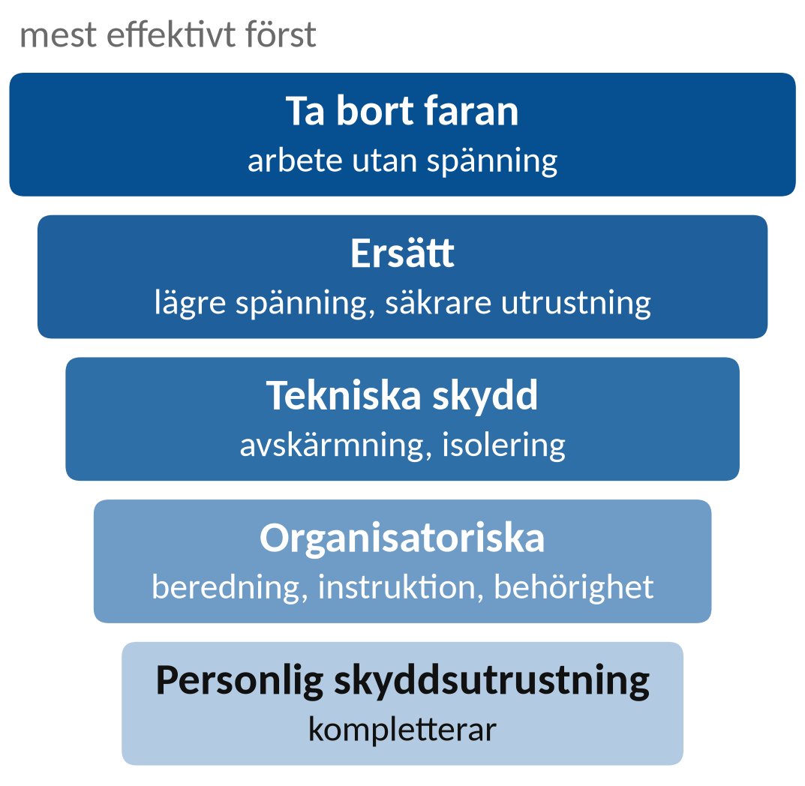
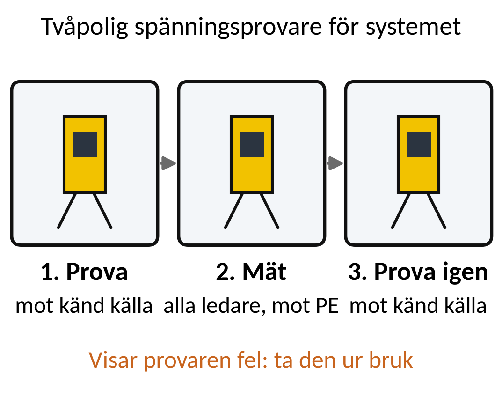
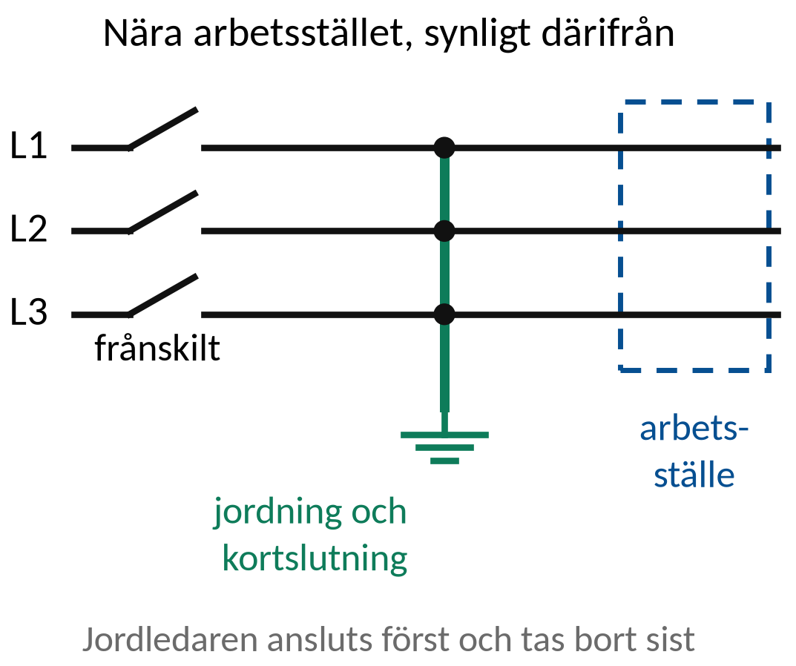
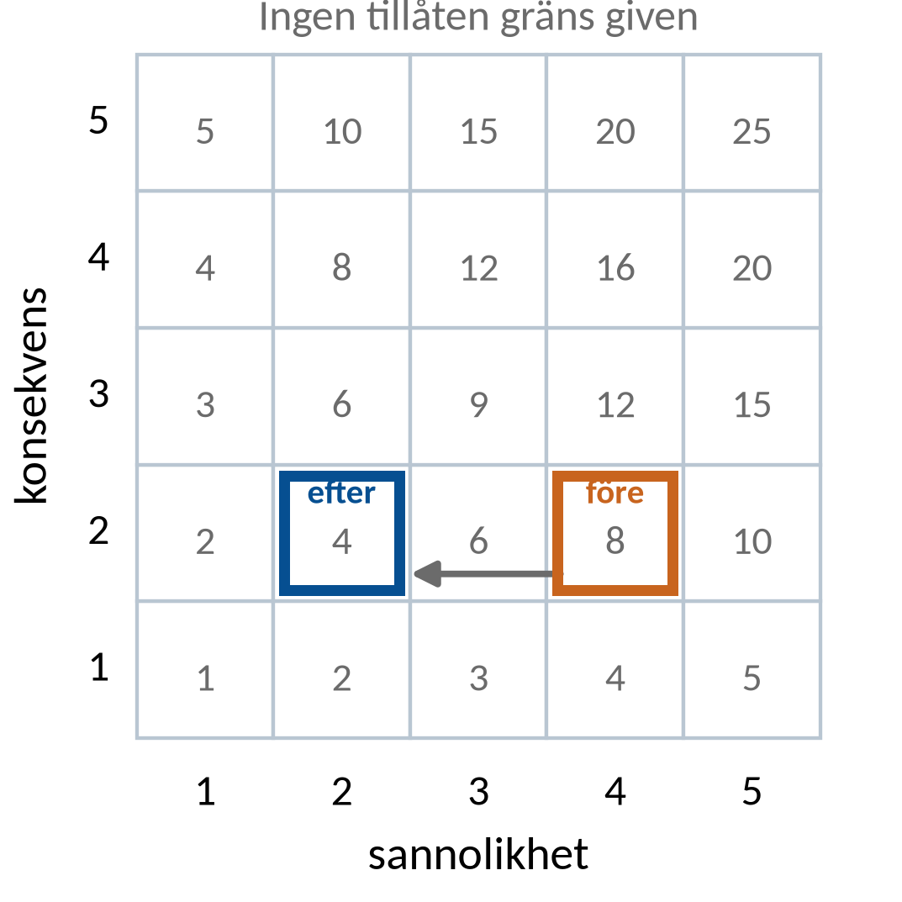

Vecka 42 · Del 3 av 3
Del 3: Riskbedömning och skydd
1 Översikt
Det här ska du kunna
- Koppla varje identifierad fara till en konkret skyddsåtgärd.
- Redovisa kvarstående risk och villkor för att börja.
Fundera först: Vad saknas i en riskbedömning som bara säger ”använd skyddshandskar”? Svaret finns i teorin nedan.
Så gör du
- Läs teorin (6 korta avsnitt). Titta på figuren till varje avsnitt.
- Följ exemplen med papper och räknare, steg för steg.
- Gör övningarna 3.1–3.10. Fastnar du: Ledtråd 1 visar vilket samband du behöver och var i teorin det förklaras. Ledtråd 2 visar hur du börjar och Ledtråd 3 exemplet som räknar samma sorts uppgift med andra tal. Öppna facit när du har ett eget svar.
- Lämna in veckans uppgifter: Veckans inlämning.
Så skriver du en lösning som går att följa
1. Givet och sökt
Skriv av värden, enheter och vad du ska bestämma.
2. Samband och villkor
Välj formel eller princip. Kontrollera koppling, driftfall och antaganden.
3. Uträkning och kontroll
Omvandla enheter, sätt in värden och tolka resultatet.
I resonemangsfall: koppla observation till en motiverad slutsats.
2 Teori
Läs avsnitten i ordning. Övningarna hänvisar hit.
1. Från identifierad fara till beslut
Observation är vad vi vet om arbetsplatsen eller utrustningen.
Riskbedömning beskriver möjliga händelser och konsekvenser.
Åtgärd behöver en ansvarig och ett sätt att verifiera effekten.
Startbeslut kräver att villkoren för det avgränsade arbetet är uppfyllda.
2. Arbetsmomentets gränser
Riskbedömningen börjar med en konkret uppgift och arbetsplats.
Ange vad som ingår och vad som ligger utanför uppdraget.
Fara, händelse, konsekvens, åtgärd
Exempel: skadad kabel kan ge spänningsförande hölje.
Åtgärden behöver hindra både exponering och återanvändning.
3. Prioritering av skydd
Planeringen ska i första hand minska eller avlägsna faran.
Personlig skyddsutrustning kompletterar övriga åtgärder.

Skyddsutrustning väljs mot den bedömda risken
Vanliga arbetshandskar är inte automatiskt elektriskt isolerande.
Skydd mot ljusbåge behöver rätt klassning och användning.
4. Provare, låsning och märkning
Tvåpolig spänningsprovare väljs för systemets spänning och kategori.
Låsning och märkning stöder skydd mot återinkoppling.

Instrumentets funktion måste vara tillförlitlig
Vald kontrollmetod, instrumentkontroll och arbetsgräns framgår av den lokala arbetsinstruktionen.
5. Jordning och kortslutning
Åtgärden kan skydda mot oavsiktlig återspänningssättning och andra elektriska risker i arbetsområdet.

Behov och utförande styrs av anläggning och metod
Högspänning kräver särskild utrustning, kompetens och plan.
Kursfallet är en dokumentationsövning utan verkligt handhavande.
6. Kvarstående risk och stoppvillkor
En åtgärd behöver ha ansvarig person och verifiering.
Osäker arbetsgräns eller ändrade förutsättningar kräver nytt beslut.
Villkor för start, avbrott och återlämning
”Klart” behöver betyda att angivna kontroller är utförda.
Skriv hur avvikelser hanteras och kommuniceras.
3 Exempel
Följ exemplet steg för steg med papper och räknare. Övningarna använder samma metod med andra tal.
Exempel: en användbar riskrad
Moment: undersöka frånskild kopplingslåda K4. En möjlig reservmatning är ännu inte identifierad.
Fara, händelse, konsekvens och verifierbar åtgärd
- Fara: möjlig kvarvarande energitillförsel till K4.
- Händelse och följd: beröring kan ge strömgenomgång.
- Åtgärd: utsedd ansvarig kartlägger matningen enligt aktuell plan.
Startvillkor: samtliga berörda källor och skyddsåtgärder är verifierade. Oklar matning ger stopp.
Exempel på riskrad
Moment: inspektion av frånskild kopplingslåda i fuktig miljö.
Fara: alternativ matning och skadad isolering.
Åtgärd: kartläggning, säkring och verifiering enligt plan
Ansvarig och kontrollresultat anges före startbesked.
Kvarstående osäkerhet om matning innebär att arbetet väntar.
Exempel: riskpoäng med begränsning
En övningsmatris anger sannolikhet 4, konsekvens 2. Efter åtgärd bedöms sannolikheten till 2.

Riskpoäng = sannolikhet · konsekvens
- Före: 4 · 2 = 8.
- Efter: 2 · 2 = 4.
- Poängen sjunker i denna matris. Det betyder inte att risken har halverats.
Ingen tillåten gräns är given. Poängtalet visar därför inte att arbetet får starta.
4 Övningar
Räkna på papper. Bocka av en övning när du har kontrollerat ditt svar mot facit. Avbockningen sparas i den här webbläsaren.
Övning 3.1: Arbetsgräns
Uppgiften är att undersöka kopplingslådan K2. Underlaget säger bara ”i maskinrummet”. Vad behöver du veta mer exakt?
Givet: Arbetet gäller kopplingslådan K2 i maskinrummet. Inga anslutningar är angivna.
Ledtråd 1: vilken princip?
Utgå från Arbetsgränsen identifierar objekt och berörda delar. Läs Teori 4: Provare, låsning och märkning.
Ledtråd 2: hur börjar jag?
Ett rum anger en plats, men inte vilka ledare, anslutningar och matningar som berörs. Ange vad som behöver klargöras: exakt vilken apparat, vilka delar som ingår, matningar och risker i närheten.
Ledtråd 3: steg för steg
1) Vilken apparat är det exakt, med beteckning? 2) Vilka ledare och plintar ingår i arbetet? 3) Varifrån matas den, och finns det mer än en matning? 4) Vad finns i närheten som kan vara spänningssatt? Skriv minst tre av dem.
Facit
Objektets beteckning, vilka ledare och plintar som ingår, alla matningsvägar och närliggande spänningssatta delar.
Övning 3.2: Fara och konsekvens
Formulera en fara och en möjlig konsekvens för en skadad kabel i en våt miljö.
Givet: En kabel med synlig skada i våt miljö. Ingen har kontrollerat om den är spänningssatt.
Ledtråd 1: vilken princip?
Utgå från Fara, möjlig händelse och konsekvens. Läs Teori 2: Arbetsmomentets gränser.
Ledtråd 2: hur börjar jag?
Fara är det som kan skada. Händelsen är det som kan inträffa. Konsekvensen är skadan som kan följa. Bygg en orsakskedja utan att framställa en antagen spänningssättning som observation.
Ledtråd 3: steg för steg
1) Fara: vad kan skada? 2) Händelse: vad kan inträffa? 3) Konsekvens: vilken skada kan det bli? Skriv en kedja: fara → händelse → konsekvens. Annat fall: en oljefläck på durken → någon halkar → brutet ben.
Facit
Exempel: Fara: skadad isolation i våt miljö. Händelse: någon berör den skadade delen. Konsekvens: strömgenomgång.
Övning 3.3: Skyddsutrustning som enda åtgärd
Riskraden säger ”risk för elchock, använd handskar”. Varför räcker det inte?
Givet: Riskraden säger bara ”risk för elchock, använd handskar”. Det står inget om klassning, arbetsmetod eller ansvar.
Ledtråd 1: vilken princip?
Utgå från Skydd behöver väljas mot en konkret risk. Läs Teori 3: Prioritering av skydd.
Ledtråd 2: hur börjar jag?
Personlig skyddsutrustning är ett komplement till åtgärder som minskar faran. Förklara vad som saknas för att kunna bedöma om skyddet räcker. Vanliga arbetshandskar skyddar inte mot el.
Ledtråd 3: steg för steg
1) Vad gör handskar: minskar de faran eller skyddar de bara personen? 2) Står det vilken elektrisk klass handskarna ska ha? 3) Vad saknas om hur faran minskas, arbetsmetoden och ansvaret? Skriv två saker som raden borde ha med.
Facit
Den säger inte hur faran eller exponeringen minskas, vilken arbetsmetod som gäller eller vem som ansvarar. Handskarna har ingen angiven elektrisk klass.
Övning 3.4: Lås och skylt
Det sitter en skylt på en brytare, men inget hindrar att den slås till igen. Räcker skylten?
Givet: Skyddet mot återinkoppling i arbetsplanen är inte genomfört. Det finns bara en skylt.
Ledtråd 1: vilken princip?
Utgå från Märkning informerar, skydd mot återinkoppling ska fungera. Läs Teori 4: Provare, låsning och märkning.
Ledtråd 2: hur börjar jag?
En skylt visar ett budskap. Den hindrar inte automatiskt någon från att slå till. Jämför den faktiska åtgärden med planens skyddsfunktion och motivera beslutet.
Ledtråd 3: steg för steg
1) Vad gör en skylt, och vad gör ett lås? 2) Vad kräver planen: information eller att tillkoppling hindras? 3) Motivera beslutet med skillnaden mellan de två.
Facit
Nej. En skylt informerar men hindrar inte tillkoppling. Planen kräver ett fungerande skydd, till exempel lås.
Övning 3.5: Provare med skada
Spänningsprovarens kabel har synlig skada. Vad blir beslutet före kontrollen?
Givet: Skadan syns innan kontrollen har börjat. Ingen har bedömt att provaren kan användas.
Ledtråd 1: vilken princip?
Utgå från En skadad provare ger otillförlitliga förutsättningar. Läs Teori 2: Arbetsmomentets gränser.
Ledtråd 2: hur börjar jag?
Mätsladdarna och deras isolering är en del av provarens funktion och skydd. Ange hur provaren tas ur bruk och vad som krävs innan kontrollen kan göras.
Ledtråd 3: steg för steg
1) Kan en provare med skadad kabel lita på? Tänk på både mätresultatet och ditt eget skydd. 2) Vad gör du med provaren? 3) Vad behöver finnas innan kontrollen görs?
Facit
Provaren tas ur bruk och märks. Kontrollen görs inte förrän en hel och kontrollerad provare finns.
Övning 3.6: Jordningsutrustning
I en beredning för ett högspänningsarbete står det bara ”jorda”, utan objekt, utrustning eller ansvarig. Ange två saker som måste läggas till.
Givet: Högspänningsfallet är en övning i dokumentation. Inget får utföras i praktiken utifrån den här beskrivningen.
Ledtråd 1: vilken princip?
Utgå från Jordningsåtgärd kräver objekt, metod och ansvar. Läs Teori 5: Jordning och kortslutning.
Ledtråd 2: hur börjar jag?
Jordningsutrustningen måste vara dimensionerad för anläggningen och användas enligt den fastställda metoden. Ange minst två konkreta tillägg. Beskriv vad som ska kontrolleras – inte hur du själv skulle manövrera.
Ledtråd 3: steg för steg
1) Vad ska jordas, och på vilka punkter? 2) Vilken utrustning, och är den dimensionerad för anläggningen? 3) Vem ansvarar och vem kontrollerar? Välj två och skriv varför de behövs. Beskriv inte hur du själv skulle jorda.
Facit
Två av: vilket objekt och vilka punkter som ska jordas, vilken utrustning och dimensionering som gäller, och vem som ansvarar och verifierar.
Övning 3.7: Ändrade förutsättningar
Under arbetet upptäcker ni en UPS som inte finns med i beredningen. Vad ska hända med riskbedömningen?
Givet: En UPS som ingen kände till upptäcks under arbetet. Den finns inte med i beredningen.
Ledtråd 1: vilken princip?
Utgå från Ändrad matning kräver omprövad riskbedömning. Läs Teori 6: Kvarstående risk och stoppvillkor.
Ledtråd 2: hur börjar jag?
En UPS kan hålla delar spänningssatta eller ändra vad som behöver frånskiljas. Stoppa det berörda arbetet, ta reda på vad UPS:en matar och ange vad som krävs för ett nytt startbesked.
Ledtråd 3: steg för steg
1) Vad kan en UPS mata, även när huvudmatningen är bruten? 2) Vad gör ni med arbetet i det berörda området nu? 3) Vad måste läggas till i beredningen och i riskbedömningen innan ni får fortsätta?
Facit
Arbetet i berört område avbryts. UPS:en kartläggs och tas med i beredningen. Nytt startbesked ges först efter omprövad riskbedömning.
Övning 3.8: Riskpoäng
I en riskmatris för övningen är sannolikheten 3 och konsekvensen 4. Riskpoängen är produkten av de två. Efter en åtgärd bedöms värdena till 1 och 4. Beräkna poängen och förklara vad den inte säger.
Givet: Före: 3 och 4. Efter: 1 och 4. Det finns ingen gräns för vad som är godtagbart.
Ledtråd 1: vilken princip?
Utgå från Riskpoäng = sannolikhet · konsekvens. Läs Teori 2: Arbetsmomentets gränser.
Ledtråd 2: hur börjar jag?
Poängen gäller bara i den här matrisen. Siffrorna är uppskattningar och har ingen enhet. Räkna poängen före och efter och förklara varför en lägre poäng inte bevisar att kraven är uppfyllda.
Ledtråd 3: steg för steg
1) Räkna poängen: sannolikhet · konsekvens, före och efter. 2) Vilket av de två talen ändrades, och vilket är oförändrat? 3) Vad säger poängen inte om krav och kontroller? Annat fall: 2 · 5 före och 1 · 5 efter. Samma resonemang.
Facit
Före 3 · 4 = 12. Efter 1 · 4 = 4. Konsekvensen är oförändrad, och en lägre poäng visar inte att krav och kontroller är uppfyllda.
Övning 3.9: Kontroll av åtgärden
Riskraden säger ”kontrollera kabeln”. Skriv om den så att det framgår vem som ansvarar och vad resultatet ska bli.
Givet: Texten är ”kontrollera kabeln”. Kabeltyp och metod är inte angivna ännu.
Ledtråd 1: vilken princip?
Utgå från Åtgärd = vem, vad, hur och verifierat resultat. Läs Teori 2: Arbetsmomentets gränser.
Ledtråd 2: hur börjar jag?
För att en åtgärd ska kunna följas upp behövs objekt, ansvarig, kontrollmetod och ett redovisat resultat. Skriv en tydligare formulering och ange att den gällande instruktionen bestämmer metod och vad som är godkänt.
Ledtråd 3: steg för steg
1) Vem gör kontrollen? 2) Vad kontrolleras, med vilken beteckning? 3) Enligt vilken instruktion? 4) Vart förs resultatet, och när? Mall: ”[Vem] kontrollerar [vad] enligt [instruktion] [när]. Resultatet förs in i [var].”
Facit
Exempel: ”[Namn] kontrollerar kabel [ID] enligt [instruktion] före start. Resultatet förs in i protokollet med datum.”
Övning 3.10: Samlad bedömning
En grupp har hittat två matningar men kan bara kontrollera den ena. Skyddsutrustning finns. Kan arbetet börja som arbete utan spänning?
Givet: Två matningar är kända, men bara den ena är kontrollerad. Arbetet planeras som arbete utan spänning.
Ledtråd 1: vilken princip?
Utgå från Start kräver verifierade förutsättningar för vald metod. Läs Teori 6: Kvarstående risk och stoppvillkor.
Ledtråd 2: hur börjar jag?
Jämför det som är verifierat med det som den valda arbetsmetoden kräver. Jämför kända kontroller med arbetsmetodens förutsättningar. Ange vad som måste klarläggas före start.
Ledtråd 3: steg för steg
1) Vad kräver arbete utan spänning? 2) Är alla matningar kontrollerade? 3) Kan skyddsutrustning ersätta en kontroll av spänningslösheten? 4) Vad måste göras innan start?
Facit
Nej. Den andra matningen är inte verifierad, så spänningslösheten är inte säker. Skyddsutrustning ersätter inte det. Den andra matningen måste frånskiljas och verifieras först.
Klart med delen?
Vilken kontroll visar att din viktigaste skyddsåtgärd faktiskt fungerar?
Lämna riskbedömningen senast söndag 18 oktober. Ange arbetsgräns, faror, åtgärder, ansvar, kvarstående risk och kontrollerad regelhänvisning.
5 Labben
Labben kommer sist i veckan, när du har gått igenom del 1–3. Du använder samma metod som i övningarna: räkna först, läs av, jämför och förklara.
Veckans labbar Veckans inlämning
Källor och fortsatt läsning
Studieplanen YH03151, 18 september 2026 Sjöskolans kursmaterial och originalmall
SEK: SS-EN 50110-1, utgåva 4:2024
Transportstyrelsen: regler för el ombord
Transportstyrelsen: elektriska installationer